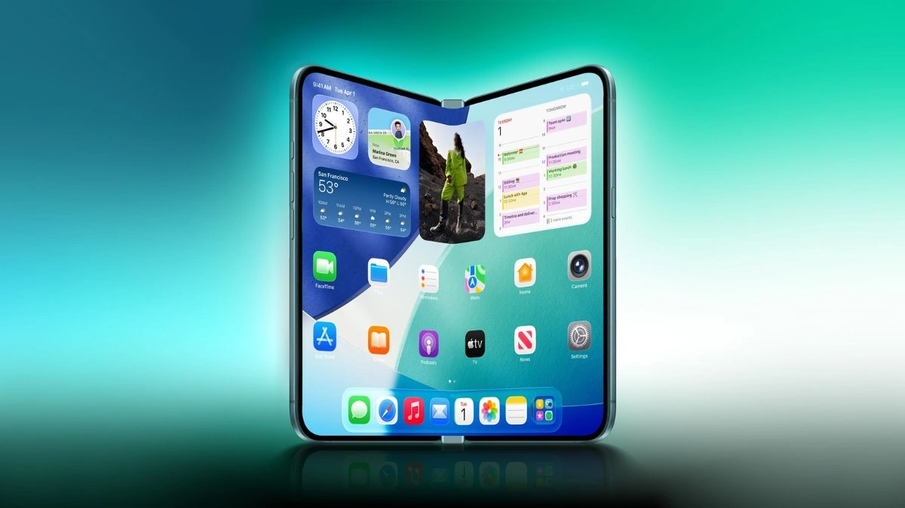

Breaking News
 Feb 2
Feb 2
by Casey Quinn
Apple is developing its first foldable iPhone, testing book-style and flip designs ahead of a premium 2026 launch that could reshape the smartphone market
It looks like Apple wants to go into the business of making foldable smartphones. The corporation, on the other hand, won't show off its first foldable iPhone for several months. It will be at the top of the lineup to make the whole line look better. Apple will come out with its first foldable iPhone in the second half of 2026. Apple has previously said that it will debut its first foldable iPhone later this year. This smaller version shows that the company wants to provide more than one type of folding phone. Apple's main emphasis right now is still the book-style foldable iPhone, which will come out later this year. Apple's first foldable iPhone is rumored to have a book-style design that opens horizontally, similar to the Samsung Galaxy Z Fold series. The first foldable iPhone will open like a book. It will have a huge interior display of roughly 7.7 inches and will prioritize video, gaming, and multitasking capabilities. At the time, Apple chose a larger book-style foldable as its initial model, which is set to come later this year. The iPhone fold is believed to be a one-of-a-kind device, smaller than the Samsung Galaxy Z Fold 7 and the Google Pixel 10 Pro Fold.
This is a major hint that Apple is finally ready to make foldables a real thing, and do it the Apple way. Apple doesn't seem to be rushing to market. Instead, it looks like it's testing a lot of different foldable designs to determine which ones work best with its ecosystem and how people use it. A high-end book-style foldable might change the "power iPhone" for gaming, videos, and multitasking. A possible flip-style variant demonstrates that Apple is also thinking about portability and everyday use. If Apple gets this right, it might make foldables popular with everyone, not just early adopters. It could also put pressure on competitors that have been in the forefront in this area for years.
However, according to a fresh online claim, the Cupertino-based tech giant is mulling a smaller clamshell form for its first foldable iPhone. According to Bloomberg's Mark Gurman, Apple is considering producing a smaller, clamshell-style folding iPhone. The smartphone, dubbed the 'iPhone Flip', would flip vertically into a tiny square form factor akin to the Samsung Galaxy Z Flip and Motorola Razr. Apple is testing a new type of folding iPhone that folds into a square, pocket-friendly shape. This device, often dubbed the iPhone Flip, would have a clamshell shape similar to today's flip phones. According to Bloomberg, Apple is developing a clamshell foldable iPhone. This gadget is believed to have comparable proportions to the Samsung Galaxy Z Flip 7. Gurman adds that prototypes of such designs have been tested inside Apple's labs, but it is unclear when the product will be available to customers. Bloomberg's Mark Gurman provided this information in his Power On newsletter. He stated that Apple engineers are already testing a square, clamshell-style folding phone at the company's labs. Apple has already looked into clamshell foldables. According to sources, in 2024, the business created a few prototypes while exploring how a foldable iPhone should function.
Apple believes that if the first foldable iPhone is successful, customers would demand more alternatives in various sizes and designs. That approach is consistent with how Apple has enlarged the normal iPhone range with Mini, Plus, and Pro versions throughout the years. Apple is banking that its first foldable iPhone will be popular enough to create actual demand for the category, and that users would desire other shapes and sizes, just as they did with standard slab-style iPhones. However, the return of a flip-style design indicates that Apple wants to see how far foldable phones can go within its ecosystem.
The iPhone Flip, on the other hand, would focus on portability. It would fold up into a small square that fits perfectly in a pocket, and then it would unfold into a regular-sized phone for everyday use. In this way, the iPhone Flip is in the same group as the Galaxy Z Flip from Samsung and the current Razr from Motorola. So, if the report is true, the folding flip iPhone might be very small when it's folded and work like a regular iPhone when it's unfurled. If Apple goes ahead, the iPhone Flip will provide users a second folding option that is smaller and easier to carry but has a smaller screen.
Despite this fresh excitement, Apple has not confirmed the iPhone Flip as an actual product. Gurman made it clear that the device is still unknown. "A clamshell iPhone is far from guaranteed to reach the market." The article does hint that Apple is considering releasing a clamshell iPhone. However, the release of this device remains "far from guaranteed." Even if Apple decides to launch the flip iPhone, it is unlikely to go on sale until at least 2027. Apple has also been working on a massive folding iPad, but the project has apparently struck development stumbling blocks. Apple was previously rumored to be working on a folding iPad. However, it looks that the manufacturer is having production troubles with this item. There is yet no official news on the price of a foldable flip iPhone. The iPhone fold is projected to be released in September 2026, with a starting price of $2,400 (about Rs 2,15,000) in the US.

Casey Quinn is a U.S. technology reporter covering innovation, digital policy, and emerging trends in the tech industry.